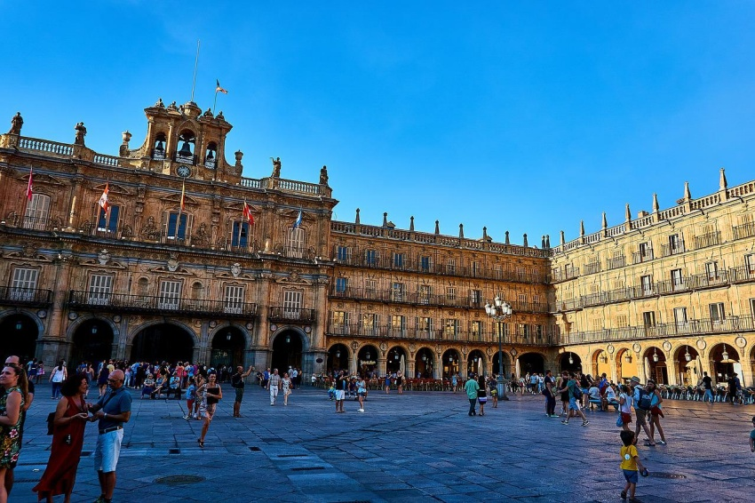
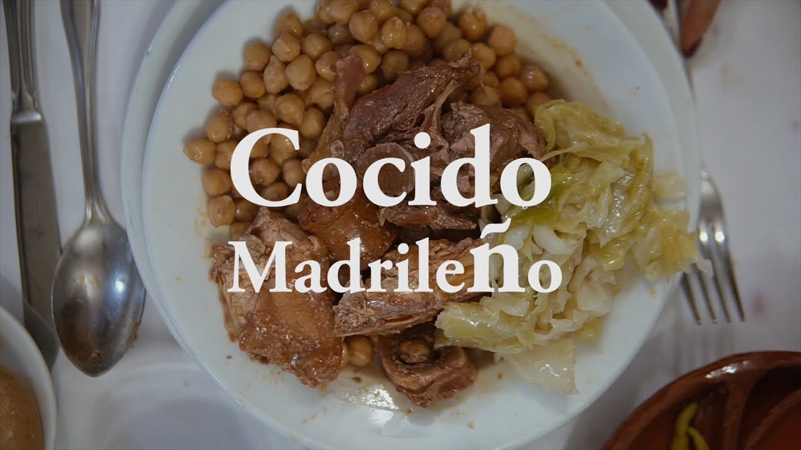
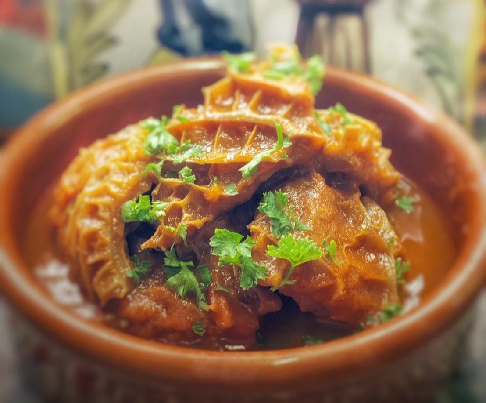
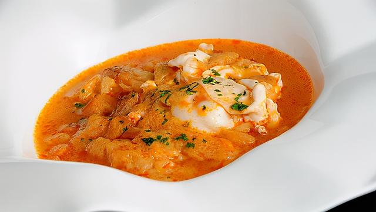
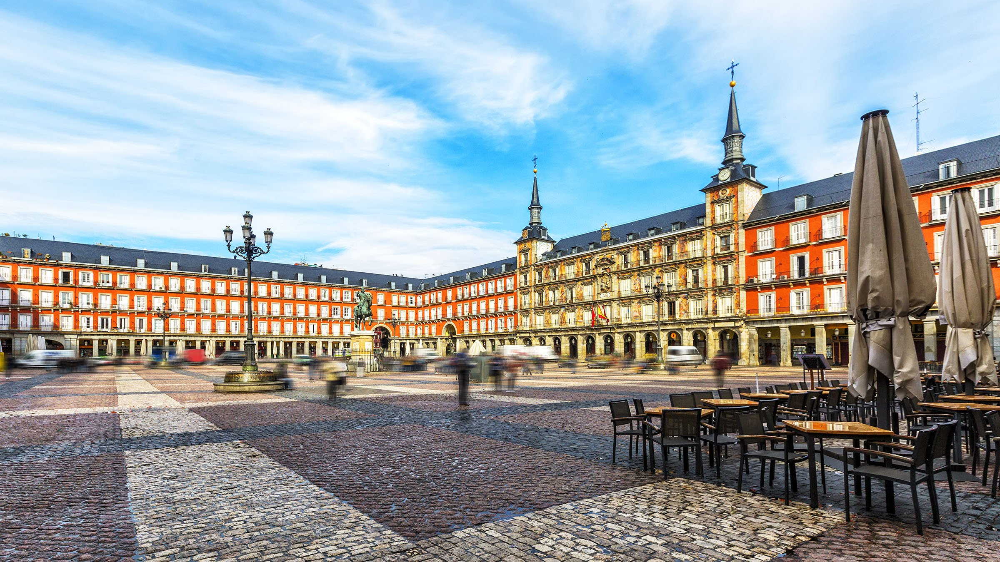
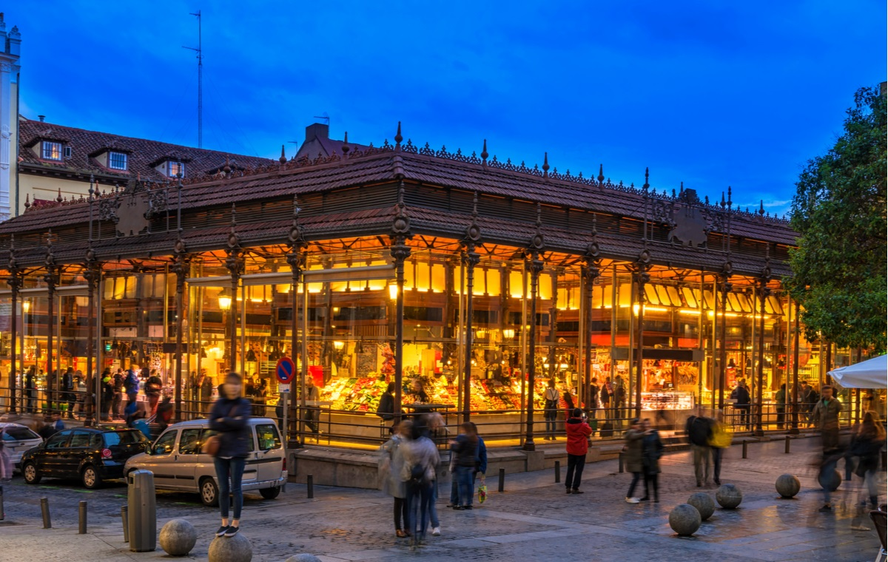
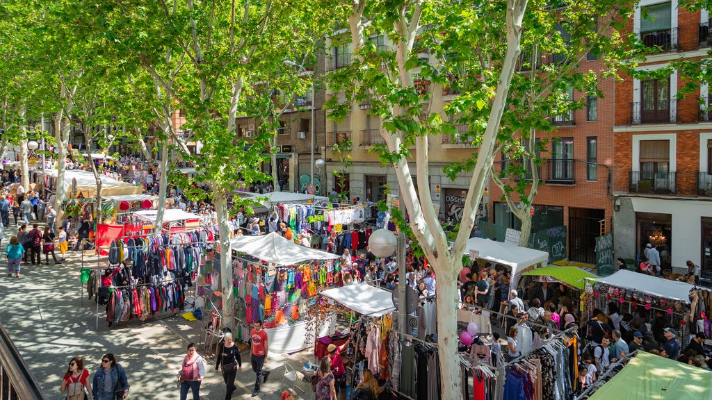

MADRID
MADRID
MADRID
是西班牙首都及最大都市，也是馬德里自治區首府，其位置處於西班牙國土中部，曼薩納雷斯河貫穿市區。市內人口約340萬，都會區人口則約627.1萬（2010年），均佔西班牙首位。 其建城於9世紀，是在摩爾人邊貿站「馬格立特」舊址上發展起來的城市；1561年，西班牙國王腓力二世將首都從托雷多遷入於此，由於其特殊的地位而得到迅速的發展，成為往後西班牙殖民帝國的運籌中心，現今則與巴塞隆納並列為西班牙的兩大對外文化窗口。
這座建於18世紀的馬德里王宮是規模僅次於法國凡爾賽宮、維也納皇宮的「歐洲第三大宮殿」， 結合新古典主義與巴洛克式的風格氣勢非凡，正面是軍械廣場， 皇宮內部裝潢更是富麗堂皇至極，可以說是西班牙國力鼎盛時期的代表作。
位於市區中心的太陽門廣場 Puerta del Sol是最知名的馬德里景點，這裡是整個西班牙公路網起點，共有10條馬路在這裡交匯，
在馬德里自由行時幾乎天天都經過，南側矗立著標誌性的老郵政大樓，廣場中還有個地鐵站出口，觀光人潮眾多。
另外中間是卡洛斯三世雕像，他是西班牙國王也是「馬德里最棒市長」。
來到太陽門廣場不能錯過的還有這個熊與野莓樹雕像(El Oso y el Madroño)，是觀光客們到此一遊的熱門打卡地標。
據說馬德里這個城市名字由來的傳說相關，反正如今「熊與野莓樹」是馬德里的市徽，在城市裡很多地方包含人行道、水溝蓋之類的都會看到。
馬德里主廣場 Plaza Mayor 是曾經的市政中心，在1589年時由西班牙國王菲利普二世下令規劃改建，於1620年落成，當時正處於大航海時代，西班牙可以說是當時歐洲最強大的國家，國力鼎盛。
馬德里雜燴鍋 (Cocido madrileño) 是著名的燉煮肉菜料理，內含 3 道佳餚。 餐廳通常會在每個星期二推出這道料理，尤其是冬季。每道料理都稱為 Vuelco，第一道是湯汁搭配少量米飯，第二道是鷹嘴豆和蔬菜，最後一道才是燉肉。 若想嘗試這種傳統菜餚，位在市中心的拉波拉 (La Bola) 餐廳便是品嚐的最佳地點之一。
不妨也試試馬德里燉牛肚 (callos a la madrileña)，這是由牛肚、牛鼻和牛蹄、西班牙辣香腸、黑布丁、番茄、辣椒、洋蔥和大蒜綜合而成的燉菜。 如同多數的西班牙料理，通常會搭配新鮮的麵包來沾取美味的醬汁。 這道料理也是冬季最常食用的一道菜。
另一道「大蒜湯」也是遊覽這座城市時值得一試的料理。這道料理最初來自卡斯提亞-雷昂自治區，但如今已公認為馬德里的傳統美食之一。 過去著名的作家大仲馬 (Alejandro Dumas) 曾對美味的大蒜湯讚不絕口，從此這道料理聲名遠播。
主廣場是馬德里最宏偉的開放式廣場之一，共有 9 個入口通道，而 17 世紀的壁畫和位於廣場中心的腓力三世國王銅像，則點綴其間。 這座聚會場所全年都會舉辦不少熱鬧活動，而當地最受歡迎的活動包括充滿活力的主廣場聖誕市集，以及為馬德里守護神聖伊西多羅舉辦的慶典等。 如果您觀光後剛好有點餓，不妨試試這裡咖啡廳和三明治店鋪供應的咖啡、啤酒和馬德里的經典風味魷魚三明治。
自 1916 年以來，聖米蓋爾市場就成了美食愛好者聚集之地。 這座緊鄰主廣場的市場設有超過 30 個攤位，各自販售著新鮮的海鮮、醃製肉類、葡萄酒、啤酒、糕點和巧克力。 每天 10:00 至 00:00 (星期五和星期六至 01:00) 在馬德里，品嚐美味的西班牙小吃是最受歡迎的活動，聖米蓋爾市場內坐落著好幾間酒吧，供您隨意挑選。 市場內的 5 間小吃吧都供應誘人的新鮮牡蠣和經典西班牙美食，像是辣味番茄醬拌馬鈴薯 (在辛辣番茄醬中放入馬鈴薯) 和大蒜蝦。
對精打細算的購物行家來說，在馬德里必做的熱門休閒活動，就是到埃爾拉斯特洛跳蚤市場購物。要逛遍整個露天市場並不容易，因為當中有多達 3,000 多個攤位。在每星期天 09:00 - 15:00 之間會有大批人群蜂擁而至，來這裡選購五花八門的商品，從黑膠唱片、書籍、鐘錶到二手衣服、手提袋和首飾，應有盡有。 埃爾拉斯特洛跳蚤市場周邊林立著古雅的咖啡廳和酒吧，您可以在盡情採購之後，找間店點杯苦艾酒當作午餐前的開胃酒，接著品嚐美味可口的當地小吃。
